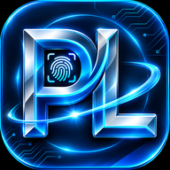

Registro Ciudadano
Equipo Pedro León
Accede al formulario y al panel administrativo desde Google Apps Script.
Abrir registro ciudadanoEl registro requiere conexión a internet. No se almacenan datos personales en esta página.

Equipo Pedro León
Accede al formulario y al panel administrativo desde Google Apps Script.
Abrir registro ciudadanoEl registro requiere conexión a internet. No se almacenan datos personales en esta página.